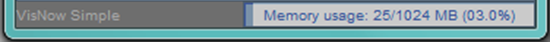

|
|
|
STATUS BAR
Status bar contains Memory monitor, which shows memory used, maximum allocated memory (static and dynamic) and percentage of memory used to maximum allocated memory. Click RMB on Memory monitor to change presentation of maximum allocated memory into static or dynamic mode.

[Hint: Double-click LMB on Memory monitor runs Garbage Collector.]